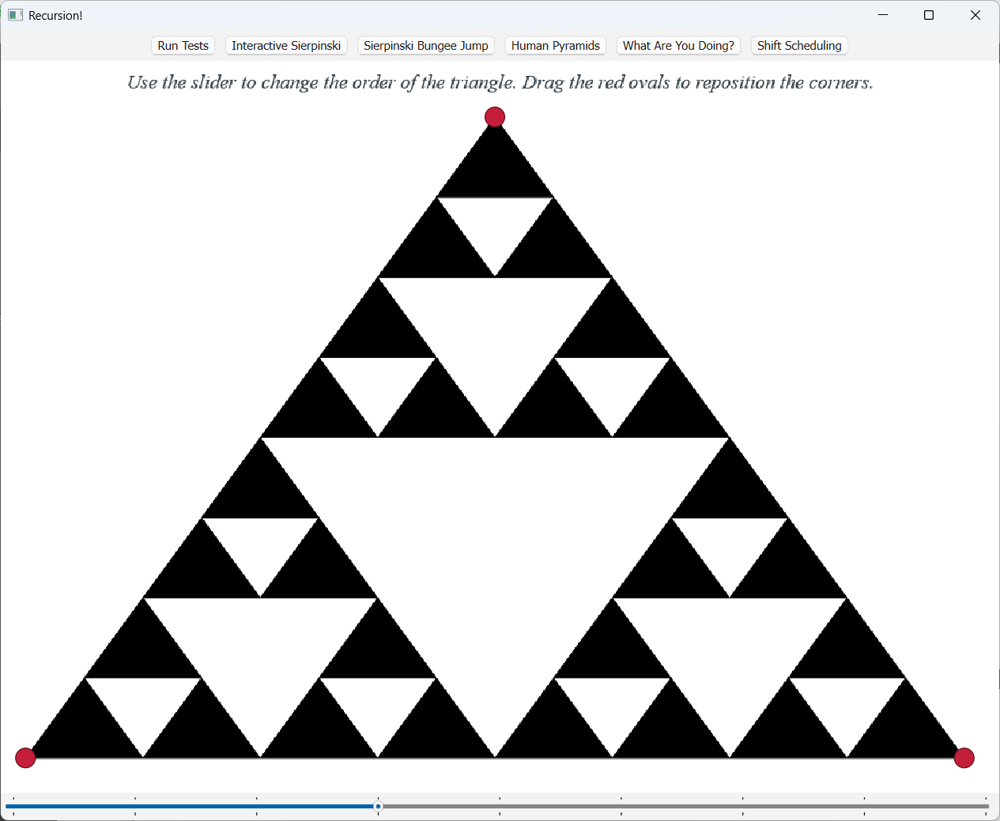
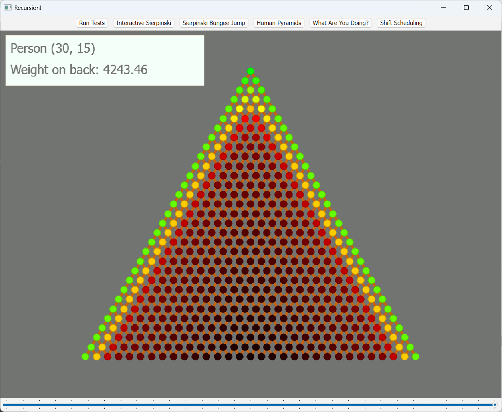
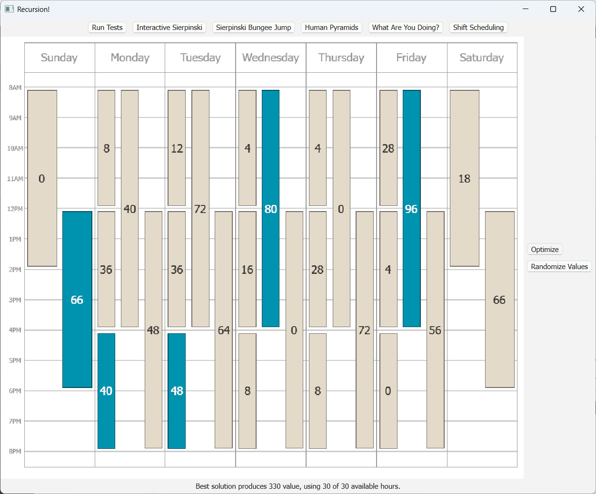

Assignment3¶
作业地址：Recursion!
备注：作业3实际应该在学完lec10**穷举搜索**和lec11**回溯法**后再写，会轻松很多。我看完lec9就写了，写得非常痛苦
Part One: The Sierpinski Triangle¶
谢尔宾斯基三角形。
代码实现¶
void drawSierpinskiTriangle(GWindow& window,
double x0, double y0,
double x1, double y1,
double x2, double y2,
int order) {
if (order < 0) {
error("order < 0");
} else if (order == 0) {
drawTriangle(window, x0, y0, x1, y1, x2, y2);
} else {
drawSierpinskiTriangle(window, x0, y0, (x0 + x1) / 2, (y0 + y1) / 2, (x0 + x2) / 2, (y0 + y2) / 2, order - 1);
drawSierpinskiTriangle(window, x1, y1, (x0 + x1) / 2, (y0 + y1) / 2, (x1 + x2) / 2, (y1 + y2) / 2, order - 1);
drawSierpinskiTriangle(window, x2, y2, (x2 + x1) / 2, (y2 + y1) / 2, (x0 + x2) / 2, (y0 + y2) / 2, order - 1);
}
}
结果展示¶

Part Two: Human Pyramids¶
人类金字塔。 1. memoization

代码实现¶
不愿意代码里出现多个
160，所以声明了一个全局常量。（在静态局部变量和全局常量中选择了全局常量，虽说容易污染全局变量空间什么的，但我还是觉得这样可读性和后续修改起来更好一点）#include "HumanPyramids.h" #include "hashmap.h" using namespace std; const double PERSON_WEIGHT = 160.0; double weightOnBackOf(int row, int col, int pyramidHeight) { static HashMap<string, double> m; string key = to_string(row) + "," + to_string(col); if (m.containsKey(key)) { // 检查是否已经计算过了 return m[key]; } if (row < 0 || col < 0 || col > row || row > pyramidHeight) { error("Illegal input"); // 越界访问报错 } if (row == 0 && col == 0) { // Base case return 0.0; } // Recursive case double result = 0.0; if (col > 0) { // 左上有人 result += (PERSON_WEIGHT + weightOnBackOf(row - 1, col - 1, pyramidHeight)) / 2; } if (col < row) { // 右上有人 result += (PERSON_WEIGHT + weightOnBackOf(row - 1, col, pyramidHeight)) / 2; } m[key] = result; // 缓存 return result; }
结果展示¶

Part Three: What Are YOU Doing?¶
这题可以参考一下课上讲的练习题
evaluate：变量index
- 每次递归到终止条件得到一种可能结果currentResult
- 所有currentResult加起来的集合results，就是所有可能的强调情况
#include <cctype>
#include "strlib.h"
...
void allEmphasesOfHelper(const Vector<string>& tokens, int index, Set<string>& results, string currentResult);
Set<string> allEmphasesOf(const string& sentence) {
Vector<string> tokens = tokenize(sentence);
Set<string> results;
allEmphasesOfHelper(tokens, 0, results, "");
return results;
}
void allEmphasesOfHelper(const Vector<string>& tokens, int index, Set<string>& results, string currentResult) {
// Base case: 遍历tokens结束
if (index == tokens.size()) {
results.add(currentResult);
return;
}
string token = tokens[index];
// Recursive case
if (isalpha(token[0])) {
// 该单词大写的情况
string upperCase = toUpperCase(token);
allEmphasesOfHelper(tokens, index + 1, results, currentResult + upperCase);
// 该单词小写的情况
string lowerCase = toLowerCase(token);
allEmphasesOfHelper(tokens, index + 1, results, currentResult + lowerCase);
} else { // 跳过非字母
allEmphasesOfHelper(tokens, index + 1, results, currentResult + token);
}
}
Part Four: Shift Scheduling¶
lengthOf()返回班次的工作时长，valueOf()返回班次带来的价值、overlapsWith()比较两个班次是否冲突
lec11课堂练习
sublists和这题类似
思路：
// 递归终止条件
if（没有剩余班次了：即本次递归调用的【剩余的班次】集合已经为空）{
返回【已分配的班次集合】
}
取出一个班次
// Recursive case
if (超时 || 班次冲突) {
不选择该班次
递归【剩余的班次】
}
else {
1. 不选择该班次
- 直接递归【剩余的班次】
2. 选择该班次
- 将该班次添加到【已分配的班次】中，然后递归剩余的班次
}
比较选择/不选择该班次的value值
return value更大的Set<Shift>
// Recursive case
不选择该班次
- 递归【剩余的班次】
if (没超时 && 班次不冲突) {
选择该班次
- 将该班次添加到【已分配的班次】中，然后递归剩余的班次
}
代码实现¶
Set<Shift> highestValueScheduleForHelper(const Set<Shift>& shifts, int maxHours, Set<Shift>& assigned);
Set<Shift> highestValueScheduleFor(const Set<Shift>& shifts, int maxHours) {
if (maxHours < 0) {
error("Illegal maxHours");
}
Set<Shift> assigned;
return highestValueScheduleForHelper(shifts, maxHours, assigned);
}
Set<Shift> highestValueScheduleForHelper(const Set<Shift>& shifts, int maxHours, Set<Shift>& assigned) {
// Base case:
if (shifts.isEmpty()) {
return assigned;
}
Shift currentShift = shifts.first();
Set<Shift> remainingShifts = shifts - currentShift;
bool overlapped = false;
for (Shift s : assigned) {
if (overlapsWith(s, currentShift)) {
overlapped = true;
break;
}
}
int currentTime = lengthOf(currentShift);
bool overtime = (currentTime > maxHours) ? true : false;
Set<Shift> selected = assigned;
Set<Shift> unselected = assigned;
// 所有的Shift都有“不选择”的情况
unselected = highestValueScheduleForHelper(remainingShifts, maxHours, unselected);
if (!overtime && !overlapped) { // 只有满足条件的Shift才能在当前这次可能结果中“选择”
selected += currentShift;
selected = highestValueScheduleForHelper(remainingShifts, maxHours - currentTime, selected);
}
int v1 = 0;
for (Shift s : unselected) {
v1 += valueOf(s);
}
int v2 = 0;
for (Shift s : selected) {
v2 += valueOf(s);
}
return (v1 > v2) ? unselected : selected;
}
结果展示¶

恭喜完成Assignment 3！
这次作业是目前耗时最久最难的一次，Part 1、2还比较容易，到Part 3就需要好好思考了，Part 4更是尝试了好久好久。
应该还可以优化，我累了